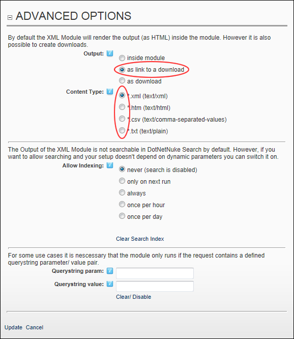
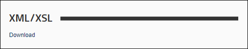
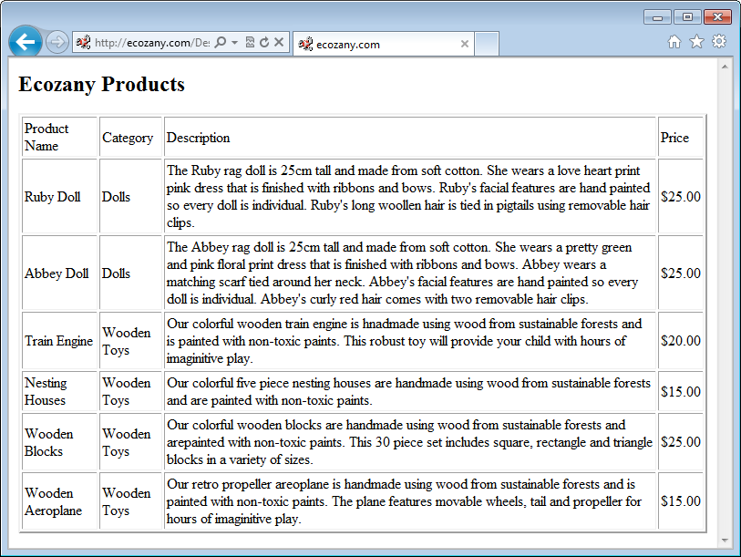

Setting XML/XSL Output as a Download Link
How to set the results of an XML/XSL transformation to be downloaded via a link displayed on the XML module. The content of the download file can be set to a number of formats.
- Select
 Edit Module Configuration from the XML/XSL module actions menu. This opens the XML Module Configuration page.
Edit Module Configuration from the XML/XSL module actions menu. This opens the XML Module Configuration page.
- Maximize
 the Advanced Options section.
the Advanced Options section.
- At Output, select As Link To A Download.
- At Content Type, select the type of file for the download from these options: *.xml (text/xml), *.htm (text/html), *.csv (text/comma-separated-values), or *.txt (text/plain)

- Click the Update link. This returns you to the XML module which displays the Download link.

- Optional. Click the Download link to view the output in the current web browser.

Results of XML module set as Link to a Download